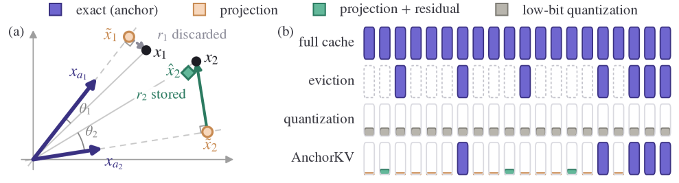

Why it matters왜 중요한가
At 128K context a single Llama-3.1-8B request holds a 16 GiB KV cache in bf16 — as much as the weights serving it. The cache, not the model, decides how many requests a device holds.
128K 컨텍스트에서 Llama-3.1-8B 요청 하나가 bf16으로 16 GiB의 KV 캐시를 든다 — 그 요청을 서빙하는 가중치와 맞먹는다. 한 장치가 몇 개의 요청을 담을지는 모델이 아니라 캐시가 결정한다.
The interesting claim here is diagnostic, not just architectural. Eviction methods score tokens using an observation window at prefill and drop the rest — but that scoring happens before the decoding queries exist. The paper argues this is not an occasional failure but the family's dominant failure mode, and shows it: on RULER tasks requiring retrieval against distractors or aggregation over the whole context, the best eviction baseline collapses below 16% of full-cache accuracy. AnchorKV keeps the exact same scoring machinery — SnapKV's observation window — but changes what the score decides: how many bytes a token gets, not whether it survives. A mispriced token is stored coarsely and remains reachable, instead of being gone.
여기서 흥미로운 주장은 구조가 아니라 진단이다. eviction 계열은 prefill 시점의 observation window로 토큰을 점수화하고 나머지를 버리는데, 그 점수화는 디코딩 쿼리가 존재하기 전에 일어난다. 논문은 이것이 가끔의 실패가 아니라 이 계열의 지배적 실패 양식이라 주장하고, 실제로 보인다: 방해 문서 속 검색이나 전체 컨텍스트 집계를 요구하는 RULER 과제에서 최고 eviction baseline은 full 캐시 정확도의 16% 아래로 무너진다. AnchorKV는 같은 점수화 기계 — SnapKV의 observation window — 를 그대로 쓰되, 그 점수가 결정하는 대상을 바꾼다: 토큰의 생존 여부가 아니라 토큰이 받는 바이트 수. 잘못 매겨진 토큰은 사라지는 대신 거칠게 저장되고 여전히 닿을 수 있다.

By the numbers핵심 숫자
The headline result, in one table헤드라인 결과를 표 하나로
| Ratio압축률 | Method방법 | S3 | MK3 | CWE | Avg |
|---|---|---|---|---|---|
| 1× | FullKV | 100.0 | 100.0 | 93.5 | 95.0 |
| 10× | SnapKV | 88.0 | 59.0 | 49.7 | 86.6 |
| 10× | PyramidKV | 61.0 | 36.0 | 35.1 | 81.2 |
| 10× | AdaKV | 97.0 | 86.0 | 66.1 | 91.0 |
| 10× | AnchorKV | 100.0 | 100.0 | 92.6 | 94.6 |
| 20× | SnapKV | 30.0 | 19.0 | 29.4 | 75.9 |
| 20× | PyramidKV | 11.0 | 4.0 | 21.0 | 72.1 |
| 20× | AdaKV | 51.0 | 53.0 | 39.9 | 82.5 |
| 20× | AnchorKV | 100.0 | 98.0 | 91.8 | 94.4 |
Three decisions that define the method방법을 규정하는 세 결정
Anchor + coefficient, not a shared centroid
Each non-anchor token picks the anchor with maximum absolute cosine and stores its orthogonal projection onto that direction: γᵢ = ⟨xᵢ, x_a⟩ / ‖x_a‖². The distinction from codebook/merging methods is precise — when tokens collapse onto a shared representation, the softmax can no longer separate them. Here every token keeps its own coefficient along its anchor, so no two reconstructions are identical.
각 비-anchor 토큰은 절대 코사인이 최대인 anchor를 고르고 그 방향으로의 직교 사영을 저장한다: γᵢ = ⟨xᵢ, x_a⟩ / ‖x_a‖². 코드북·병합 계열과의 차이는 명확하다 — 토큰들이 공유 표현으로 뭉개지면 softmax가 그들을 더 이상 구분할 수 없다. 여기서는 모든 토큰이 자기 anchor 방향으로 자기만의 계수를 가지므로 두 복원값이 같아지지 않는다.
Rank by attention-output error, not by size or attention
A large residual on a barely-attended token changes the output little; so does heavy attention on a token its anchor already fits. Applying the softmax Jacobian splits Δy into a K channel (modulated by ‖Vₜ − y‖) and a V channel, giving per-token utilities uK, uV. Ablations confirm the ranking earns its keep: cosine, residual norm, attention score and random all lose, and the gaps widen as the budget tightens.
거의 주목받지 않는 토큰의 큰 residual은 출력을 별로 바꾸지 않고, anchor가 이미 잘 맞추는 토큰에 쏠린 어텐션도 마찬가지다. softmax 야코비안을 적용하면 Δy가 K 채널(‖Vₜ − y‖로 조절됨)과 V 채널로 나뉘어 토큰별 효용 uK, uV가 나온다. ablation은 이 순위가 값을 한다는 걸 확인한다: 코사인·residual 노름·어텐션 점수·무작위가 모두 지고, 예산이 빡빡해질수록 격차가 벌어진다.
One knob, exact bytes
The user sets θ, the fraction of the cache to retain. Anchors and metadata are committed first; whatever remains buys N residuals, split evenly between keys and values. The accounting charges every stored tensor — indices, coefficients, masks, scales — so the compressed footprint never exceeds the budget. Every other hyperparameter (W=32, k=S/128, ρ=0.7, κ=7) is fixed across all models and benchmarks.
사용자는 캐시 유지 비율 θ 하나만 정한다. anchor와 메타데이터가 먼저 확정되고, 남는 것이 N개의 residual을 사서 key와 value에 절반씩 나뉜다. 회계는 인덱스·계수·마스크·스케일까지 모든 저장 텐서를 계산에 넣으므로 압축 후 용량이 예산을 넘지 않는다. 나머지 하이퍼파라미터(W=32, k=S/128, ρ=0.7, κ=7)는 모든 모델·벤치마크에서 고정이다.
How it works어떻게 작동하나
- Pick anchors, once, at the end of prefill.prefill 끝에서 anchor를 한 번 고른다. The last W=32 positions are always exact and serve triple duty: recency window, observation queries, and free anchor directions. A fraction ρ=0.7 of the remaining slots goes to the highest SnapKV scores; the rest is sampled uniformly — because high-attention tokens make good targets but not necessarily good directional coverage. 마지막 W=32 위치는 항상 정확히 저장되며 세 역할을 겸한다: recency window, observation 쿼리, 그리고 공짜 anchor 방향. 남은 슬롯의 ρ=0.7은 SnapKV 점수 상위에, 나머지는 균등 샘플링으로 간다 — 어텐션이 높은 토큰이 좋은 표적이긴 해도 방향 커버리지가 좋다는 보장은 없기 때문이다.
- Project every other token — keys before RoPE.나머지 토큰을 사영한다 — key는 RoPE 이전에. Positional rotation weakens the directional similarity the assignment depends on: the median cosine to the nearest anchor is 0.27 lower after RoPE. Since RoPE is a per-position linear map it distributes over the decomposition, so keys are stored unrotated and rotated during decoding. 위치 회전은 할당이 의존하는 방향 유사도를 약화시킨다: RoPE 이후 최근접 anchor와의 중앙값 코사인이 0.27 낮다. RoPE는 위치별 선형 사상이라 분해에 분배되므로, key는 회전 전 상태로 저장하고 디코딩 때 회전한다.
- Score every token's residual by its output cost.모든 토큰의 residual을 출력 비용으로 점수화한다. Using the m observation queries already available at the end of prefill, compute uK and uV — one pass over the cache, no extra forward. prefill 끝에 이미 확보된 m개의 observation 쿼리로 uK와 uV를 계산한다 — 캐시 1회 순회, 추가 forward 없음.
- Spend the residual budget, pooled across heads.head 전체를 모아 residual 예산을 쓴다. Utilities are comparable across KV heads within a side, so heads compete for one per-layer budget. Ablation: the per-head shares are far from uniform and shift with the input, so an equal split cannot follow them. 효용은 같은 쪽(K 또는 V) 안에서 KV head 간 비교가 가능하므로 head들이 층 단위 예산 하나를 놓고 경쟁한다. ablation: head별 배분은 균등과 거리가 멀고 입력에 따라 변한다. 균등 분배로는 따라갈 수 없다.
- Decode straight from the compressed form.압축된 형태에서 곧바로 디코딩한다. A FlashAttention-style tiled Triton kernel reconstructs each key tile only when consumed, rotates it, and contracts in registers. The dense cache is never materialized, so the runtime footprint is the compressed footprint. FlashAttention 방식의 타일 Triton 커널이 각 key 타일을 소비할 때만 복원하고, 회전시키고, 레지스터에서 축약한다. 밀집 캐시는 결코 물질화되지 않으므로 런타임 용량이 곧 압축 용량이다.
What to take away그래서, 가져갈 것
Reframe the decision, not the scorer. AnchorKV reuses SnapKV's exact scoring machinery and beats it by ~30 points at 20×, purely by changing what the score buys: bytes, not survival. A cheap lesson that likely generalizes beyond KV caches.
점수 매기는 방식이 아니라 결정을 다시 짜라. AnchorKV는 SnapKV의 점수화 기계를 그대로 재사용하면서 20×에서 약 30점 차로 이긴다. 바뀐 것은 그 점수가 사는 대상뿐이다 — 생존이 아니라 바이트. KV 캐시 너머로도 일반화될 법한 값싼 교훈이다.
Perturbation beats truncation. Because no position leaves the softmax, the error is bounded as a perturbation of the exact output — and the value-side bound is literally eviction's cost scaled by a factor ≤ 1. The structure of the guarantee, not just the accuracy, is what differs.
잘라내기보다 섭동이 낫다. 어떤 위치도 softmax를 떠나지 않기에 오차가 정확한 출력의 섭동으로 유계이며, value 쪽 한계식은 문자 그대로 eviction이 치르는 비용에 ≤1인 계수를 곱한 것이다. 정확도만이 아니라 보장의 구조가 다르다.
Compression gets easier with scale. Retention rises 93.5% → 95.3% → 99.3% from 8B to 70B — exactly the regime where the cache is most expensive to hold. But note it is not simply "bigger models are more robust": eviction on Mistral-24B stays under 67%, no better than at 8B.
규모가 커질수록 압축이 쉬워진다. 유지율이 8B→70B에서 93.5% → 95.3% → 99.3%로 오르는데, 이는 캐시를 들고 있기 가장 비싼 구간이다. 다만 단순히 "큰 모델이 더 강건하다"는 얘기는 아니다: Mistral-24B에서 eviction은 67% 아래에 머물러 8B와 다를 바 없다.